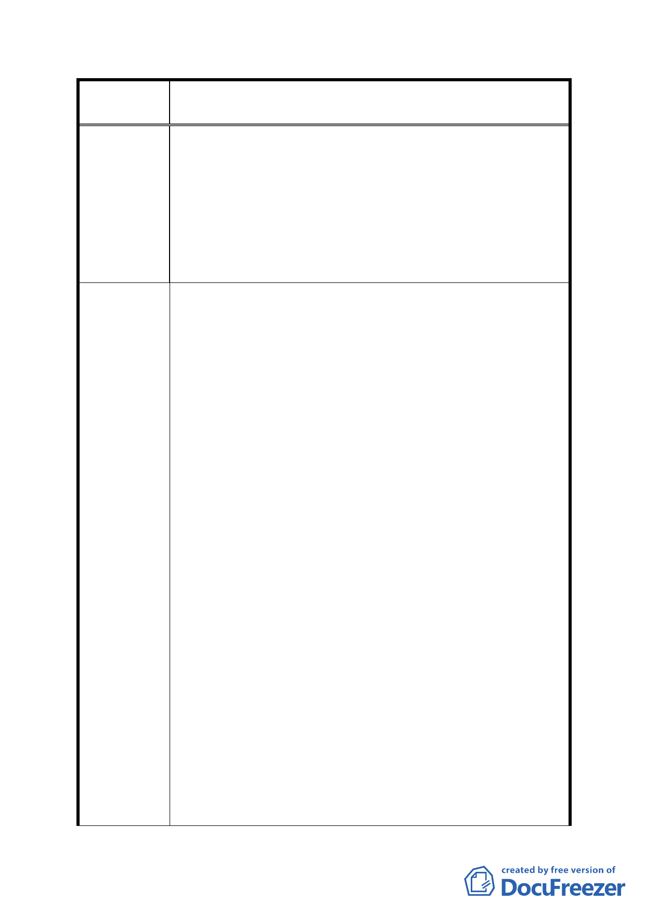

案
名
修訂臺北市「基隆河（中山橋至成美橋段）附近地區土地使
用分區與都市設計管制要點」（北段地區）計畫案
八、本項規定對於尊重市場需求、地主意願，地主合建分配
條件及建築設計之多元性等，有實務施行上之困難且影
響開發意願。若指定使用組別為一般事務所、自由職業
事務所及金融保險業時其營業樓地板面積規模須大於
500平方公尺之規定，每戶總價將高達億元，將產生與內
湖科學園區內之類似使用用途產品難以區隔，單價卻差
異甚大，衍生大彎北段商用不動產難與相鄰區位競爭，
開發可行性大幅減低。
一、「商業區、娛樂區之建築基地，作附表1指定使用項目
之容積樓地板面積應達申請基地總容積樓地板面積l/2
以上者，始得就該指定使用項目之容積樓地板面積適用
本項綜合設計放寬規定之獎勵」之限制取消，回歸「台
北市分區使用管制視則」中綜合設計放寬獎勵及比照第
三種商業區規定﹒【詳 p.31 修正對照表編號十一修訂
內容四 .( 一 ).1.(3) 】
二、回饋代金公式，應取消。【詳 p.35 修正對照表編號十
九修訂內容十七】
三、A1、A2商業區及B1、B2 娛樂區合併大型基地開發5％容
積獎勵應予至少延長五年。【詳 p.29 修正對照表編號
十修訂內容四】
建 議 辦 法 四、建築物允許增加之總樓地板面積，以其所留設之公共開
放空間「有效面積」乘以「〈附表1指定使用項目之容積
樓地板面積 )/( 申請基地總容積樓地板面積〉x100%」
乘以二分之一計算之方式，修改為「建築物允許增加之
總棲地板面積，以其所留設之開放空間有效面積乘以容
積積乘以二分之ㄧ計算之」。【詳 p.31 修正對照表編
號十一修訂內容四 .(-).2 】
五、有關商業區、娛樂區最小建蔽率之限制取消，或將最小
建蔽率調整為35％為原則。【詳 p.30 修正對照表編號
十一修訂內容四 .( 一 ).1.(2)】
六、「適用容積移轉者不得超過基準容積之20％」之限制取
消 。 【 詳 p.31 修 正 對 照 表 編 說 十 一 修 訂 內 容
四 .( 二 ) 】
- 67 -